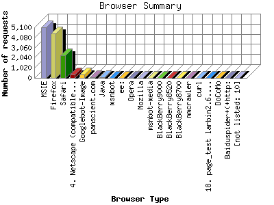

The Browser Summary identifies the most popular web browsers used to visit
this site.
Browsers are broken down by recognized categories such as
Netscape Navigator/Communicator, Microsoft Internet Explorer, WebTV, Opera
and the like. Within each category is also a subgroup by version number
such as 'MSIE 5.0' or 'Netscape 4.5'.
This report shows the first 20 results by number of requests. This report is sorted by number of requests.

| Browser Type | Number of requests | |
|---|---|---|
| 1. | MSIE | 5,071 |
| 2. | Firefox | 4,458 |
| 3. | Safari | 2,300 |
| 4. | Netscape (compatible) | 363 |
| 5. | Googlebot-Image | 338 |
| 6. | panscient.com | 70 |
| 7. | Java | 63 |
| 8. | msnbot | 31 |
| 9. | ee: | 20 |
| 10. | Opera | 17 |
| 11. | Mozilla | 13 |
| 12. | msnbot-media | 8 |
| 13. | BlackBerry9000 | 6 |
| 14. | BlackBerry8520 | 6 |
| 15. | BlackBerry8700 | 5 |
| 16. | mmcrawler | 4 |
| 17. | curl | 4 |
| 18. | page_test larbin2.6.3@unspecified.mail | 3 |
| 19. | DoCoMo | 2 |
| 20. | Baiduspider+(+http: | 2 |
| [not listed: 10] | 12 | |
This report was generated on August 11, 2010 12:12.
Report time frame January 31, 2010 00:52 to August 10, 2010 21:27.
| Web statistics report produced by: analog 6.0 / Report Magic 2.21 |